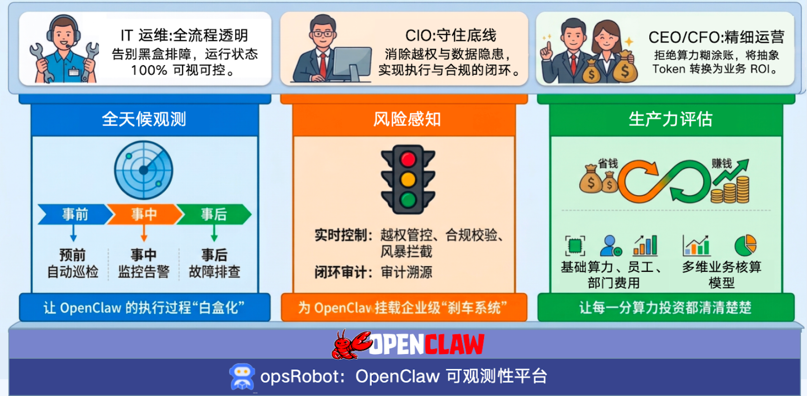

OpenClaw Observability Platform 文档指南
🎉 欢迎阅读 OpenClaw Observability Platform (OpenClaw 可观测性平台) 的官方文档！
OpenClaw 可观测性平台，基于 KWeaver Core 框架开发，使用 OTel 协议、eBPF 技术对智能体进行全链路追踪与监管，提供故障快速排查、安全合规管控及算力精益运营的管理能力，护航 AI 赋能业务的高质量增长。
🎯 我们的使命与核心价值
在真正的企业落地实践中，大语言模型带来的不确定性和“黑盒”问题严重阻碍了自动化流程。OpenClaw 可观测平台的愿景是帮助开发与 IT 安全团队看清数字员工运行的每一处细节，兼顾效率与安全。
🔭 全天候观测：让 OpenClaw 的执行过程“白盒化”
- 核心能力：构建贯穿全局的观测体系，提供事前（预前自动巡检）、事中（实时监控告警）、事后（精准故障排查）的全生命周期保障。
- 业务价值 (赋能 IT 运维)：全流程透明，彻底告别黑盒排障，确保系统运行状态 100% 可视可控。
🛡️ 风险感知：为 OpenClaw 挂载企业级“刹车系统”
- 核心能力：建立坚固的安全防线，涵盖实时控制（越权管控、合规校验、风暴拦截）与闭环审计（审计溯源）两大核心机制。
- 业务价值 (赋能 CIO)：坚守系统底线，消除越权调用与数据安全隐患，实现业务执行与安全合规的完美闭环。
📊 生产力评估：让每一分算力投资都清清楚楚
- 核心能力：依托多维业务核算模型，精准拆解并追踪基础算力、员工个体及业务部门维度的费用消耗情况。
- 业务价值 (赋能 CEO / CFO)：驱动精细化运营，拒绝算力“糊涂账”，将抽象的大模型 Token 直观转化为清晰的业务 ROI。

📖 文档导航
我们为您准备了从入门到精通的各阶段材料。请根据您的角色与需求选择阅读内容：
🚀 快速起步系列
帮助您在短时间内完成本地拉起和系统接入。
- 👉 快速入门篇：包含前置要求解读、单机拉起分析前端组件、在几步内看到效果的全流程。
- 👉 部署与数据接入拓扑：讲述如何在多环境安装使用
Vector以及流式导入海量日志。
🧩 核心功能大观
深入了解控制面板上的数据逻辑和场景。
- 👉 审计概览看板：全局监控数字员工的活跃规律和安全态势。
- 👉 会话与流水线审计：通过拓扑图深度追踪一次复杂对话的前因后果。
- 👉 特权变更审计：观测环境漂移，追踪系统内敏感文件覆盖溯源。
- 👉 成本评估与分析：如何查看不同模型、不同通道带来的费用情况及其拆解。
🏗️ 架构探秘
满足开发极客的好奇心，分析数据管道内幕。
- 👉 OTel & eBPF 数据流水线：从架构视角看日志数据抓取引擎设计如何保持轻量。
💻 开发者贡献指引
准备向 OpenClaw Observability Platform 发起您的第一个 PR 吗？
- 👉 开发指南与环境构建：前后端调试要求，环境变量详解与数据库测试指南。
GitHub 官方仓库: https://github.com/aishu-opsRobot/openclaw-observability-platform